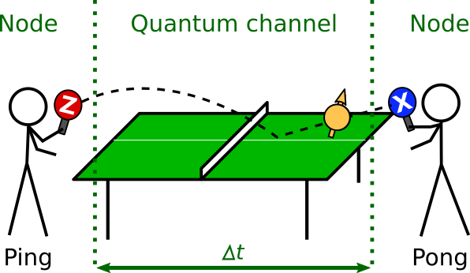
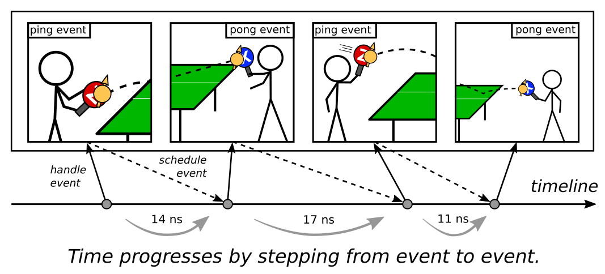
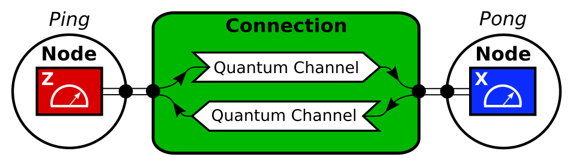

NetSquid in 10 minutes
Welcome to this quick start guide to NetSquid. In this guide we will give a brief outline of how to use NetSquid. For a more in-depth introduction you can follow the tutorial or experiment with the provided examples. To run the code examples presented in this guide you will need to have NetSquid installed, which you can do by following these instructions. If you have any questions along the way please feel free to ask them on the NetSquid forum.
We will give a brief walk-through of how to set up and run a quantum network simulation that plays a game of ping-pong between two ‘players’ using a qubit. If the concept of a qubit is completely new to you it may help to first refer to the start of the tutorial for a short introduction. The game is played by the two players, Ping and Pong, who take turns measuring the qubit in the their preferred basis – the standard (Z) or Hadamard (X) bases respectively – and then sending the qubit on to the other via a shared quantum channel. We can model this game in a network. Where the players are represented by nodes, and they are connected with the quantum channel. A cartoon of this setup is illustrated below:
{kind=link}
To model and simulate this example we will introduce and utilise the four key pieces that make up NetSquid: the qubits that store and carry quantum information, a simulation engine that accurately accounts for the passage of time, components that physically model the quantum network, and protocols that describe the classical control at the various nodes in the network (the software).
Qubits
Qubits are the actors of any quantum network simulation: they can be dynamically created or destroyed, transmitted via quantum channels or stay put in quantum memories, decohere with age, and entangle with each other as they interact. By default qubits are created in the \(\vert 0 \rangle\) state e.g.
>>> import netsquid as ns
>>> qubits = ns.qubits.create_qubits(1)
>>> qubits
[Qubit('QS#0-0')]
>>> qubit = qubits[0]
>>> # To check the state is |0> we check its density matrix using reduced_dm():
>>> ns.qubits.reduced_dm(qubit)
array([[1.+0.j, 0.+0.j],
[0.+0.j, 0.+0.j]])
The quantum state of qubits can be directly manipulated using quantum operators.
For example, to transform the qubit’s state from \(\vert 0 \rangle\) to \(\vert 1 \rangle\) we can use the X operator:
>>> ns.qubits.operate(qubit, ns.X)
>>> ns.qubits.reduced_dm(qubit)
array([[0.+0.j, 0.+0.j],
[0.+0.j, 1.+0.j]])
Note that quantum operators are purely linear algebra transformations. In a quantum computer the operators are performed by quantum gates. These physical quantum gates often introduce some noise to the qubits; the tutorial explains how gates can be physically modeled with noise, losses and delays.
For the ping-pong game the two nodes will be performing projective measurements on their qubit. A qubit can be directly measured using the measure() function. This function returns the measurement result as either 0 or 1, as well as the probability with which it got the specific measurement result. The default measurement basis is the standard basis (Z).
>>> measurement_result, prob = ns.qubits.measure(qubit)
>>> if measurement_result == 0:
... state = "|0>"
... else:
... state = "|1>"
>>> print(f"Measured {state} with probability {prob:.1f}")
Measured |1> with probability 1.0
To measure in the Hadamard (X) basis we can change the measurement observable parameter:
>>> measurement_result, prob = ns.qubits.measure(qubit, observable=ns.X)
>>> if measurement_result == 0:
... state = "|+>"
... else:
... state = "|->"
>>> print(f"Measured {state} with probability {prob:.1f}")
Measured |-> with probability 0.5
>>> ns.qubits.reduced_dm(qubit)
array([[ 0.5+0.j, -0.5+0.j],
[-0.5+0.j, 0.5+0.j]])
The outcome of the measurement is now random. When running the above code yourself you might measure \(\vert + \rangle\) instead.
For more information about qubits you can look at the qubits tutorial or the qubit documentation.
Simulation engine
To track the time evolution of qubit quantum states and account for communication and processing delays in a network a discrete event simulation engine is used. In a nutshell the simulator schedules events at specific times on a timeline, and progresses time by chronologically stepping through these events. Simulation entities can listen for and react to these events, and optionally schedule future events in the process. This is illustrated in the cartoon below where the Ping and Pong players are each simulation entities that handle ping and pong events, and in turn schedule new future pong and ping events, respectively.
Ping hits the qubit to Pong and schedules an event 14ns in the future. The simulator steps to this event on the timeline and increases the simulation time by 14ns. Pong was waiting for that event; upon receiving the event he handles it by hitting the qubit back and scheduling another event 17ns in the future. The simulation steps to this event again and the whole process is repeated.
For more information about the simulation engine you can look at the discrete event tutorial or the pyDynAA documentation.
Components
In order to simulate the ping-pong example we will first need to model a quantum network to run it on. Such a network can be set up in NetSquid by linking the provided component base classes together. Components in NetSquid are simulation entities that model the hardware of the network physically. They can be composed of functional models that characterise their behaviour, IO ports for communication, and, in the case of composite components, other subcomponents. The main components we will need for our example are two one-way quantum channels to transmit the qubit in both directions. For convenience we can wrap these two channels in a single connection component, that connects to two node components representing the Ping and Pong players. The diagram below gives a schematic illustration of our network setup in terms of components:
{kind=link}
Let us set up this network in NetSquid. First start by creating the two remote nodes:
>>> from netsquid.nodes import Node
>>> node_ping = Node(name="Ping")
>>> node_pong = Node(name="Pong")
To transmit our qubit between these nodes we will use quantum channel components. To determine the transmission delay for these channels we will define a custom delay model that depends on the length of each channel. Let us set the average qubit speed to be 50% of the speed of light in vacuum with a standard deviation of 5%. A custom class that models the transmission delay is then:
>>> from netsquid.components.models import DelayModel
...
>>> class PingPongDelayModel(DelayModel):
... def __init__(self, speed_of_light_fraction=0.5, standard_deviation=0.05):
... super().__init__()
... # (the speed of light is about 300,000 km/s)
... self.properties["speed"] = speed_of_light_fraction * 3e5
... self.properties["std"] = standard_deviation
... self.required_properties = ['length'] # in km
...
... def generate_delay(self, **kwargs):
... avg_speed = self.properties["speed"]
... std = self.properties["std"]
... # The 'rng' property contains a random number generator
... # We can use that to generate a random speed
... speed = self.properties["rng"].normal(avg_speed, avg_speed * std)
... delay = 1e9 * kwargs['length'] / speed # in nanoseconds
... return delay
We are now ready to create the quantum channels. We set the length of each one-way quantum channel to be 2.74 meters, the length of a standard ping-pong table.
>>> from netsquid.components import QuantumChannel
...
>>> distance = 2.74 / 1000 # default unit of length in channels is km
>>> delay_model = PingPongDelayModel()
>>> channel_1 = QuantumChannel(name="qchannel[ping to pong]",
... length=distance,
... models={"delay_model": delay_model})
>>> channel_2 = QuantumChannel(name="qchannel[pong to ping]",
... length=distance,
... models={"delay_model": delay_model})
A connection component provides a convenient way to wrap the two channels into one component that we can connect between the two nodes. We also choose names for the ports that the nodes will use to send and receive the qubit.
>>> from netsquid.nodes import DirectConnection
...
>>> connection = DirectConnection(name="conn[ping|pong]",
... channel_AtoB=channel_1,
... channel_BtoA=channel_2)
>>> node_ping.connect_to(remote_node=node_pong, connection=connection,
... local_port_name="qubitIO", remote_port_name="qubitIO")
The connection goes both ways, so Ping and Pong can now send and receive qubits to/from each other by using their “qubitIO” ports.
For more information about components you can look at the components tutorial or the components documentation.
Protocols
To describe the game-playing behaviour of the two nodes we will use protocols: virtual simulation entities that will handle the incoming qubits at each node. Protocols model the software to be run on the physical components. We could also choose to forward the qubit to another component at the node, such as a quantum memory or a detector, but we skip such a modelling option for the sake of simplicity. The protocol we need at each node should wait for any incoming qubits on the node’s port. When a qubit arrives it should measure it in the preferred basis, then directly send it back through the same port. The following PingPongProtocol does this:
>>> from netsquid.protocols import NodeProtocol
...
>>> class PingPongProtocol(NodeProtocol):
... def __init__(self, node, observable, qubit=None):
... super().__init__(node)
... self.observable = observable
... self.qubit = qubit
... # Define matching pair of strings for pretty printing of basis states:
... self.basis = ["|0>", "|1>"] if observable == ns.Z else ["|+>", "|->"]
...
... def run(self):
... if self.qubit is not None:
... # Send (TX) qubit to the other node via port's output:
... self.node.ports["qubitIO"].tx_output(self.qubit)
... while True:
... # Wait (yield) until input has arrived on our port:
... yield self.await_port_input(self.node.ports["qubitIO"])
... # Receive (RX) qubit on the port's input:
... message = self.node.ports["qubitIO"].rx_input()
... qubit = message.items[0]
... meas, prob = ns.qubits.measure(qubit, observable=self.observable)
... print(f"{ns.sim_time():5.1f}: {self.node.name} measured "
... f"{self.basis[meas]} with probability {prob:.2f}")
... # Send (TX) qubit to the other node via connection:
... self.node.ports["qubitIO"].tx_output(qubit)
The constructor of this protocol (i.e. the __init__ method) can optionally be given a qubit,
in which case it will use this qubit to kick the game off.
The protocol is started with the start method, which will call run.
The run method will run until the first yield where it will wait until it receives the qubit.
Once the qubit is received the method continues; the qubit is measured and sent back.
Once it is sent back the run method will encounter the yield once more and will wait again until it receives the qubit.
This process repeats ad infinitum until one of the protocol stops.
We can assign this protocol to both of our node components:
>>> qubits = ns.qubits.create_qubits(1)
>>> ping_protocol = PingPongProtocol(node_ping, observable=ns.Z, qubit=qubits[0])
>>> pong_protocol = PingPongProtocol(node_pong, observable=ns.X)
We are now ready to start the game.
For more information about protocols you can look at the protocols tutorial or the protocols documentation.
Running the simulation
The protocols we assigned to our two nodes, Ping and Pong, first need to be started.
Once that is done we can instruct the simulation engine to run.
By default the engine will run until there are no more scheduled events.
Because in our case the two entities continue to schedule new events forever (caused by the while True in the run() method of our protocol),
we should specify either an end time or a duration. Below we set the duration to 300 nano seconds:
>>> ping_protocol.start()
>>> pong_protocol.start()
>>> run_stats = ns.sim_run(duration=300)
17.4: Pong measured |+> with probability 0.50
33.8: Ping measured |1> with probability 0.50
51.3: Pong measured |-> with probability 0.50
69.7: Ping measured |0> with probability 0.50
87.8: Pong measured |-> with probability 0.50
104.8: Ping measured |1> with probability 0.50
122.7: Pong measured |-> with probability 0.50
140.7: Ping measured |1> with probability 0.50
157.7: Pong measured |+> with probability 0.50
176.1: Ping measured |1> with probability 0.50
197.1: Pong measured |+> with probability 0.50
214.8: Ping measured |1> with probability 0.50
231.2: Pong measured |+> with probability 0.50
250.9: Ping measured |1> with probability 0.50
267.8: Pong measured |-> with probability 0.50
284.9: Ping measured |1> with probability 0.50
The sim_run() function also returns some useful statistics that we can optionally print to diagnose our simulation:
>>> print(run_stats)
Simulation summary
==================
Elapsed wallclock time: ...
Elapsed simulation time: 3.00e+02 [ns]
Triggered events: 32
Handled callbacks: 32
Total quantum operations: 16
Frequent quantum operations: MEASURE = 16
Max qstate size: 1 qubits
Mean qstate size: 1.00 qubits
This concludes the getting started guide. For a much more detailed introduction please see the tutorial. For more elaborate examples see the section with examples.